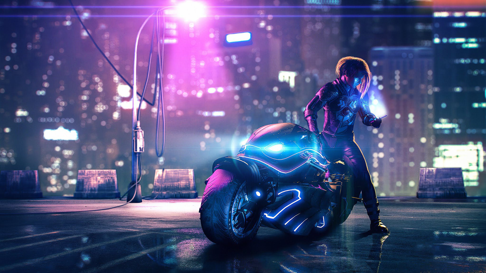

Cyberpunk was made first back in the New Wave science fiction movement of the 1960s and 1970s where authors examined the impact of drug culture, technology, and the sexual revolution while avoiding the utopian tendencies of earlier science fiction.
